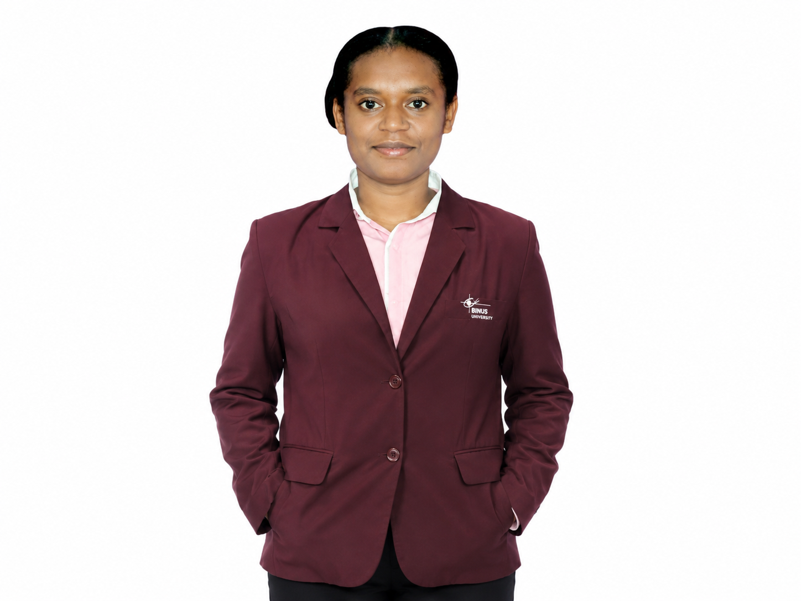
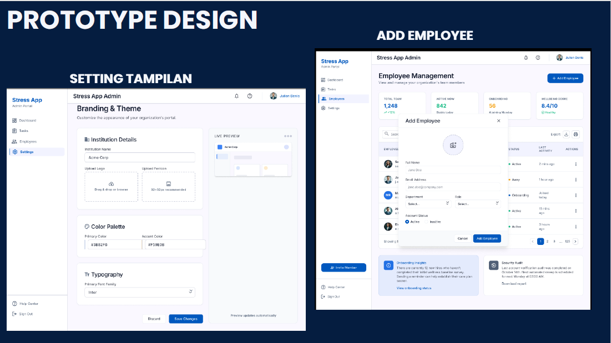
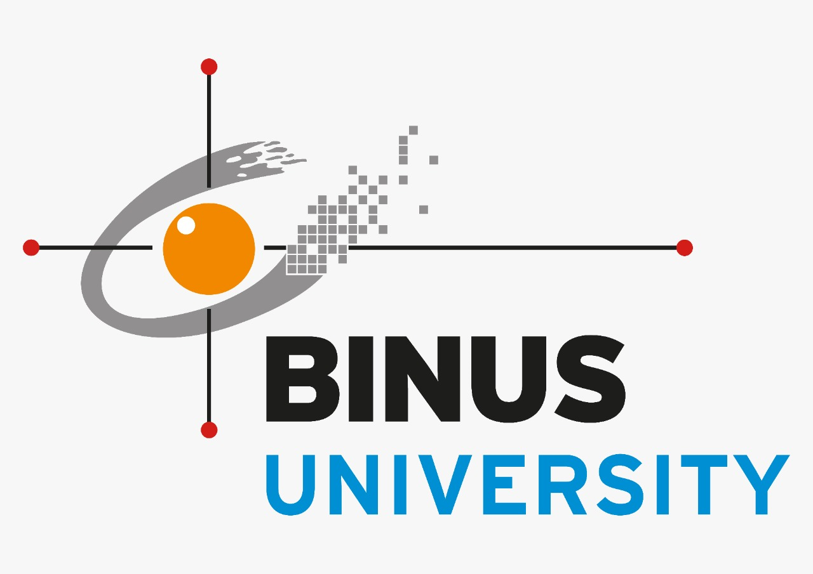

Halo Semua 👋, Saya

Saya Ririn Konjol, lahir di Teminabuan pada 24 November 2004. Saat ini saya merupakan mahasiswa semester 6 Program Studi Computer Science di BINUS University Kampus Malang. Saya sedang memperdalam kembali mata kuliah Web Programming untuk memperkuat pemahaman serta membangun fondasi kemampuan pengembangan web yang lebih baik. Meskipun belum memiliki pengalaman kerja profesional, saya terus melatih kemampuan melalui pengerjaan tugas perkuliahan, latihan mandiri, dan pembuatan berbagai proyek sederhana. Saya memiliki semangat belajar yang tinggi, senang mempelajari teknologi baru, serta berkomitmen untuk terus mengembangkan kemampuan di bidang teknologi informasi dan pengembangan perangkat lunak.
Berikut adalah beberapa proyek yang telah saya kerjakan selama perkuliahan sebagai media pembelajaran dan pengembangan kemampuan di bidang web programming.
Aplikasi Web Orvella merupakan platform layanan kesehatan dan medis yang dikembangkan sebagai proyek perkuliahan. Website ini dibangun menggunakan HTML dan CSS dengan tampilan yang sederhana, responsif, dan mudah digunakan.

Website sederhana untuk membantu pengguna melakukan deteksi awal tingkat stres menggunakan HTML, CSS, dan JavaScript sebagai media pembelajaran dalam pengembangan website interaktif.

Semester : 6
Status : Mahasiswa Aktif
Saat ini saya sedang memperdalam kembali mata kuliah Web Programming untuk memperkuat pemahaman dalam pengembangan website serta meningkatkan kemampuan membangun aplikasi web yang responsif dan mudah digunakan.
Saat ini saya fokus mengembangkan kemampuan di bidang pengembangan web melalui tugas kuliah, latihan mandiri, dan pembuatan proyek sederhana. Setiap proyek menjadi kesempatan untuk memperdalam pemahaman pemrograman sekaligus meningkatkan keterampilan dalam membangun website.
proses pembelajaran dan pengembangan proyek yang telah saya kerjakan selama perkuliahan.
Orvella adalah platform manajemen kesehatan modern yang mengintegrasikan rekam medis dengan sistem analisis citra medis berbasis Kecerdasan Buatan (AI). Sistem ini dirancang untuk mendeteksi anomali sel hasil sitologi pada CT Scan (menggunakan citra mikroskopis sel kanker serviks/sitologi) serta memantau perkembangan kesehatan pasien secara berkala.
Artikel ini menjelaskan proses pembuatan Website Pendeteksi Stres menggunakan HTML, CSS, dan JavaScript sebagai media pembelajaran dalam pengembangan website yang interaktif dan responsif.
HUBUNGI